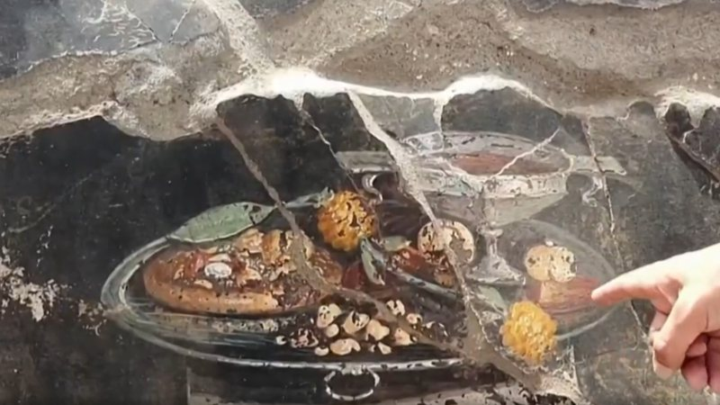

Pompeia
Arqueólogos encontraram uma pintura que pode ser o primeiro registro de uma pizza italiana. A afresco foi encontrado na parede de uma casa na antiga cidade romana de Pompeia, no sul da Itália. Segundo um comunicado do Ministério da Cultura da Itália, a imagem "pode ser um parente distante do prato moderno".
A descoberta foi anunciada na última terça-feira (27). Na pintura, é possível ver um pão achatado ao lado de uma taça de vinho. Segundo os arqueólogos, a refeição deve ter sido comido com frutas ou ainda temperado com especiarias e um tipo de molho pesto.
Pertinho de Nápoles e quase dois mil anos depois de ser destruída pelas cinzas do vulcão Vesúvio, a cidade de Pompeia ainda é uma farta fonte de novas relíquias. São elas que ajudam a reconstituir a vida no sul da Itália - e foi ali, durante a escavação de uma casa em ruínas, que acharam essa a pintura.
Simples, prática, gostosa. E democrática... A pizza não é apenas uma refeição. É linguagem universal -- como se cada pedaço guardasse um pouco da nossa memória afetiva.